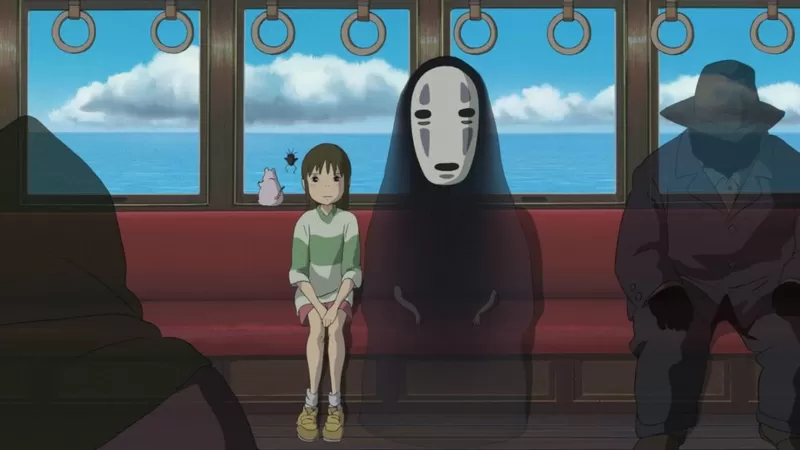
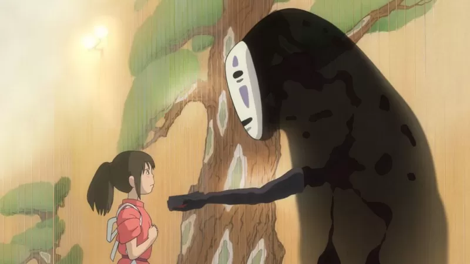
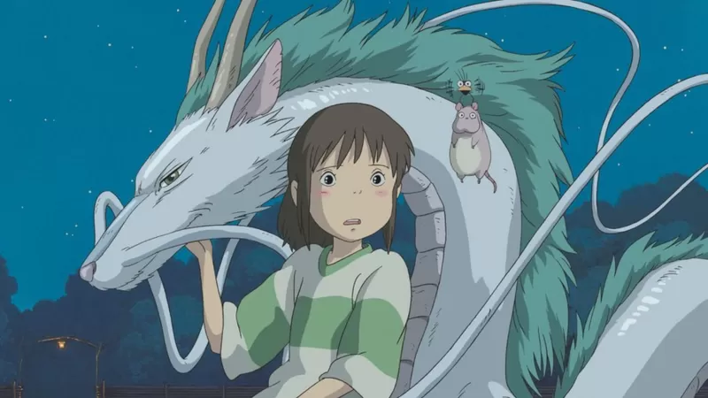
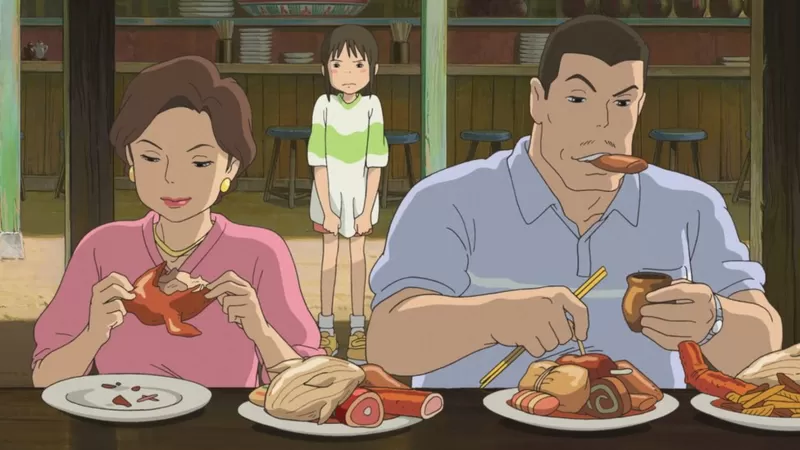

20 tahun Spirited Away
Mengapa film animasi terbaik Jepang ini masih relevan hingga kini?
dikutip dari BBC Indonesia dan ditulis oleh algi pada 9 November 2022.
Kita tersesat di dunia magis memesona bersama Chihiro, anak perempuan 10 tahun, yang tersesat ketika sedang pindah ke rumah baru bersama orang tuanya.
Film ini menceritakan kedatangan dan petualangannya di dunia yang diperintah oleh mantra, roh, dan penyihir.
Ketika ibu dan ayahnya terpesona oleh lingkungan yang tak terduga ini (kuil berlumut, tanda-tanda misterius, pesta restoran yang anehnya sepi), Chihiro secara naluriah merasa ketakutan.
Namun saat senja tiba, diiringi musik Joe Hisaishi yang membuat merinding, lanskap yang menyelimuti pun berubah dari suasana tenang pedesaan, menjadi penuh warna neon.
 Kita terpikat, dan sepertinya tidak ada jalan kembali.
Spirited Away bukan animasi Jepang pertama yang mencapai arus utama global. Pada tahun 1961, Magic Boy dan The Tale Of The White Serpent dari studio Toei Animation di Toyo didistribusikan di AS.
Generasi demi generasi anak-anak di seluruh dunia tumbuh dengan serial TV anime multi-genre, dari Science Ninja Team Gatchaman (alias Battle Of The Planets) hingga Pokemon.
Film Akira (1988) karya Katsuhiro Otomo yang diadaptasi dari manga pun memperbarui minat terhadap anime.
Namun dua dekade setelah rilisnya, Spirited Away mempertahankan kekuatannya: sebagai gerbang luar biasa menuju anime sebagai bentuk pemersatu, menuju tema lingkungan, supernaturalisme, dan kemanusiaan yang mengakar kuat di
seluruh karya Miyazaki.
Di film ini, perasaan itu terasa lebih kuat dari sebelumnya.
Bahkan nama Studio Ghibli pun memiliki unsur alam yang jelas ("ghibli" adalah istilah Italia, berasal dari bahasa Arab, yang berarti "angin gurun yang panas").
Penulis, komentator, dan penerjemah, Dr Jonathan Clements, yang karyanya antara lain ensiklopedi anime dan drama TV Jepang yang komprehensif, mencatat bahwa meskipun penggemar sejati tidak meragukan kemampuan Miyazaki,
kemenangan Oscar Spirited Away adalah "pengingat bagi orang-orang di bisnis film yang telah mengabaikan animasi Jepang selama bertahun-tahun "
Ini mendorong kehebohan soal hak cipta di belakang layar, karena beberapa perusahaan film berharap untuk mendapatkan keuntungan dari rilis anime.
Itu juga mewakili titik tertinggi dalam kemitraan distribusi Disney dengan Studio Ghibli, yang meningkatkan kesadaran global yang lebih luas untuk film-film Ghibli lainnya.
Sepanjang kisah anime ini, alam secara intrinsik bersifat magis; manusia sering kali terlihat tidak berbelas kasihan, merusak, dan tunduk pada materialisme yang membawa malapetaka.
Seperti yang juga ditunjukkan oleh Clements, fokus lingkungan dari Spirited Away adalah keahlian Miyazaki dan rekan-rekannya, dan menambah daya tarik universal film tersebut.
"Studio Ghibli secara umum selalu tertarik pada tema lingkungan," kata Clements.
"Sebagian lahir dari kepedulian tulus mereka terhadap lingkungan, dan sebagian lagi muncul dari kesadaran geografis yang lahir dari fakta bahwa studio itu sendiri berbasis di kota baru di Perbukitan Tama yang dulunya merupakan
pedesaan."
"Terasa sekali perasaan pedih [pendiri Studio Ghibli] Isao Takahata dalam Pom Poko (1994), ketika makhluk-makhluk itu sejenak mengembalikan kota pada keadaan semula sebelum pohon-pohon ditebang dan kolam-kolam diisi," jelas
Clements.
"Beberapa perusahaan film telah mengadopsi tema lingkungan sebagai penilaian yang mudah, tetapi Miyazaki tidak hanya memiliki kecintaan pada lingkungan yang berkelanjutan, tetapi juga
pada hak anak-anak untuk menjadi anak-anak.
"My Neighbor Totoro" (1988) khususnya, adalah kilasan kehidupan pedesaan untuk anak-anak yang terjebak di perumahan pinggir kota.
"Saya pikir Spirited Away mengemasnya lebih jauh lagi, dengan memberikan perumpamaan soal tekanan dan gangguan konstan modernitas, untuk seorang gadis kecil. Gadis kecil itu hanya ingin menjadi normal, tetapi tidak tahu apa yang
normal lagi, dan melihat orang tuanya menyerah pada godaan dan keserakahan."
"Sepanjang banyak film Miyazaki, kita bernostalgia akan alam yang masih alami, penghormatan terhadap alam roh (dan tradisi Shinto), dan keprihatinan tentang perubahan iklim. Ada juga narasi di mana anak perempuan dan laki-laki
cenderung jauh lebih berani dan lebih pintar daripada orang yang lebih tua," ujarnya kemudian.
Nuansa itu juga ada di debut penyutradaraan Miyazaki pada serial TV tahun 1978, Future Boy Conan (berlatar tahun 2008 pasca-apokaliptik).
Juga pada adaptasi manga 1984 Nausicaä of the Valley of the Wind, di mana seorang putri dan pejuang lingkungan pemberani melintasi Hutan Beracun sci-fi, dan pertempuran di hutan Mononoke (1997).
Miyazaki sendiri tidak selalu optimistis mengenai masalah lingkungan.
Dalam sebuah wawancara tahun 2005 di The New Yorker, dia berseru: "Populasi kita bisa tiba-tiba turun dan menghilang! Saya berbicara dengan ahli tentang itu dan saya berkata; 'Katakan yang sebenarnya'.
Dalam Spirited Away, Chihiro berteman dengan "Dragon Boy" yang misterius, dan dipaksa bekerja di pemandian mewah milik penyihir aneh Yubaba (yang merebut identitas
Chihiro, dan mengganti namanya menjadi "Sen").
Dalam satu adegan penting, Chihiro didaftarkan untuk membantu membasuh "arwah bau" raksasa yang mengunjungi pemandian.
Di tengah kekacauan, Chihiro memperlakukan makhluk itu dengan kasih sayang yang lembut, dan ia berubah menjadi roh sungai suci yang menderita akibat polusi manusia.
Miyazaki menjelaskan bahwa ia mengambil dari pengalaman masa mudanya ketika membantu membersihkan sungai, membuang sampah, yang termasuk sepeda yang ditinggalkan, dan akhirnya menyaksikan satwa liar kembali ke perairan.
Perlu juga dicatat bahwa pahlawan fiksi lain yang sangat dicintai (dan maskot Studio Ghibli), adalah roh halus Totoro yang menggemaskan, juga meminjamkan namanya untuk Totoro Funds, gerakan nyata untuk lingkungan yang
didedikasikan untuk melestarikan wilayah Perbukitan Sayama yang subur di Jepang, yang menginspirasi anime Miyazaki.
Pandangan mata seorang anak

Bagian dari keajaiban abadi Spirited Away adalah kedalaman detailnya yang luar biasa. Pahlawan "sehari-hari"nya, Chihiro, terinspirasi oleh teman-teman muda keluarga Miyazaki.
"Adegan favorit saya dari Spirited Away sebenarnya adalah saat mereka berkeliaran di kota pada awalnya, karena bagi sebagian penonton, itu memunculkan ketegangan yang luar biasa," kata Clements.
"Menurut saya, film-film Miyazaki tidak hanya menarik perhatian para zeitgeist di akhir abad ke-20, karena penontonnya baru mulai memahami masalah lingkungan, tetapi juga di abad ke-21, dengan generasi milenial yang tumbuh dengan perasaan bahwa dunia mereka telah dirusak," kata Clements.
"Saya pikir karya Miyazaki sedikit lebih optimis. Dia siap memulai dengan menanam satu pohon, dan mendorong semua orang untuk melakukan hal yang sama."